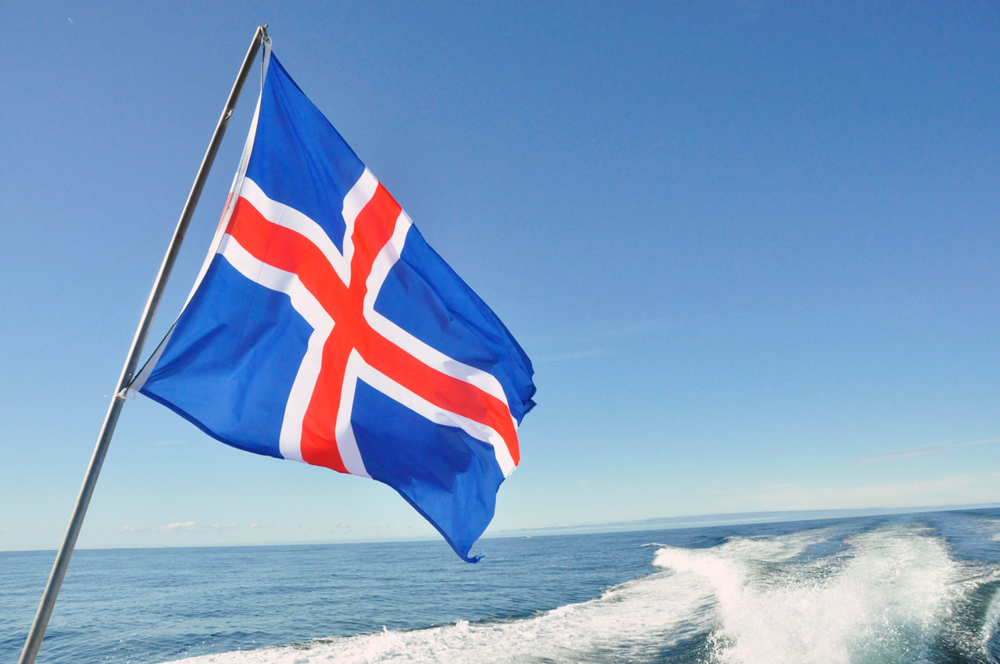
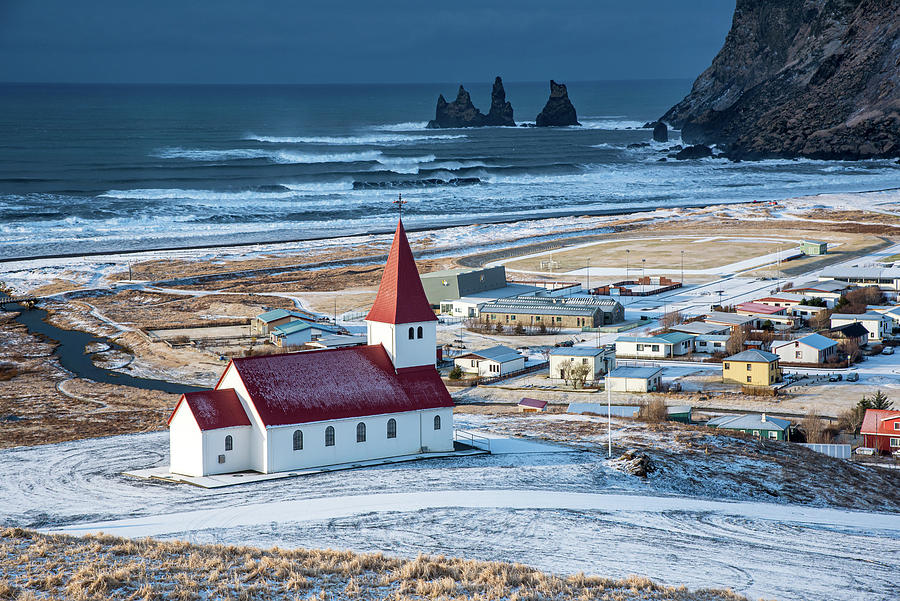
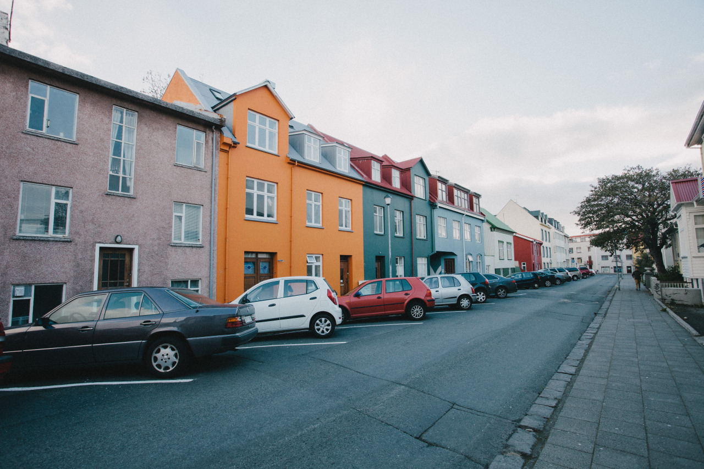
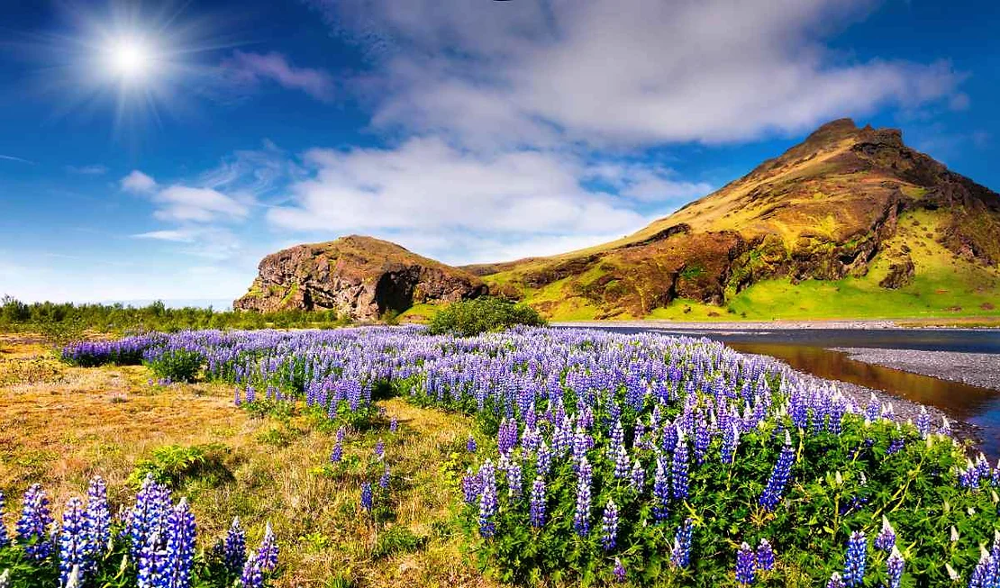

A Islândia é uma ilha vulcânica situada entre a Europa e a América do Norte, famosa por suas paisagens naturais, que incluem vulcões, gêiseres, fontes termais e geleiras.
Sua capital é Reykjavik, que é também a cidade mais populosa do país - aproximadamente 140 mil de 382 mil habitantes. Ainda assim, é um dos países menos densamente
povoados da Europa. Seu idioma oficial é o islandês.
Bandeira e seu significado
A bandeira da Islândia é composta por uma cruz escandinava vermelha, delineada em branco, sobre um fundo azul.
As cores simbolizam a paisagem islandesa: o azul representa o oceano, o branco simboliza as geleiras e a neve, e o vermelho, o fogo dos vulcões.

História
A história da Islândia é marcada por sua colonização, lutas pela independência e transformações políticas.
A colonização da Islândia começou no final do século IX, com os vikings noruegueses, liderados por Ingólfur Arnarson, que é considerado o primeiro
assentador permanente de Reykjavik.
A Assembleia Nacional, conhecida como Alþingi, foi estabelecida em 930 d.C. e é uma das instituições parlamentares
mais antigas do mundo.
Durante a Idade Média, a Islândia ficou sob o domínio norueguês e depois sob o controle dinamarquês. A luta pela independência ganhou força no século XIX,
liderada por figuras como Jón Sigurðsson, e culminou na obtenção da soberania em 1918.
A república foi oficialmente proclamada em 1944, durante a ocupação da Dinamarca pela Alemanha nazista.
No século XX, a Islândia passou por uma modernização rápida, com melhorias na infraestrutura e na qualidade de vida. A "Guerra do Bacalhau" com o Reino Unido,
que ocorreu entre as décadas de 1950 e 1970, destacou a importância dos direitos de pesca para a economia islandesa.
Mais recentemente, a crise financeira de 2008 teve um impacto profundo no país, levando a reformas econômicas e políticas.
Cultura
A cultura islandesa é rica e tem raízes profundas na literatura, música e tradições vikings. A literatura medieval da Islândia, especialmente as sagas islandesas,
é famosa mundialmente. Obras como a "Edda em Prosa" de Snorri Sturluson e as "Sagas dos Reis" são marcos significativos que retratam a história e a mitologia nórdica.
A música também desempenha um papel crucial na cultura islandesa, com artistas contemporâneos ganhando reconhecimento internacional.
Björk é uma das cantoras mais conhecidas da Islândia, com sua música experimental que combina elementos de pop,
eletrônica e música clássica. Outra banda famosa é Sigur Rós, conhecida por seu som inovador.
As tradições culturais são mantidas vivas através de festivais e celebrações. O "Þorrablót", um festival de inverno, celebra a comida e as tradições islandesas.
Reykjavik, a capital, é o principal centro cultural, abrigando diversos museus, galerias e eventos culturais, como o
Hafnarfjörður Festival e o Iceland Airwaves, um famoso festival de música.
Economia
Tradicionalmente, a pesca foi o principal motor econômico do país, representando uma grande parte das exportações islandesas.
O bacalhau, o arenque e o camarão são os principais produtos da pesca que contribuem para a economia. Empresas como a "HB Grandi" e a "Samherji" são importantes no setor pesqueiro.

Nos últimos anos, o turismo emergiu como um setor essencial para a economia islandesa. A paisagem natural, com suas geleiras, vulcões, fontes termais e fiordes, atrai milhões de turistas anualmente.
Locais como a Lagoa Azul, o Parque Nacional Thingvellir e a cidade de Reykjavik são destinos populares. O turismo não só gera receitas consideráveis mas também cria empregos e
impulsiona o desenvolvimento de infraestruturas.
Além disso, as auroras boreais, bastante comuns no país, são um grande ponto turístico que atrai turistas, principalmente entre os meses de setembro a abril.
Outro componente significativo da economia é a energia renovável. A Islândia é um dos poucos países do mundo que obtém quase toda a sua eletricidade a partir de fontes renováveis,
principalmente energia hidrelétrica e geotérmica.
Empresas como "Landsvirkjun" e "Orkuveita Reykjavíkur" desempenham papéis importantes nesse setor. Além disso, a energia barata e abundante atrai indústrias como a produção de alumínio,
representada por empresas como "Rio Tinto Alcan" e "Alcoa".
População
A Islândia tem uma população pequena, com cerca de 360.000 habitantes. A maioria das pessoas vive em áreas urbanas, especialmente na região da capital, Reykjavik.

A maior parte da população vive nas regiões litorâneas ao sul, devido ao clima mais agradável e a proximidade com a costa, que permite a atividade pesqueira.
O país apresenta uma taxa de urbanização de cerca de 94%, uma das mais elevadas do mundo.
A densidade demográfica é bastante baixa (3,4 hab/km²) devido à pequena população da ilha e aos vazios demográficos da região norte, coberta por gelo boa parte do ano.
Os islandeses são conhecidos por sua alta qualidade de vida e educação. No entanto, esse rápido desenvolvimento do país refletiu em uma diminuição da natalidade e consequente envelhecimento populacional.
Relevo
A Islândia é uma ilha vulcânica com um relevo acidentado, marcado por montanhas, vulcões ativos, geleiras, e planícies costeiras.
O país tem muitos campos de lava e fissuras devido à sua localização na dorsal mesoatlântica. Existem cerca de 30 sistemas vulcânicos ativos.
Entre os vulcões mais conhecidos está o Eyjafjallajökull, cuja erupção em 2010 ganhou fama mundial ao interromper o tráfego aéreo na Europa.
As geleiras, que cobrem aproximadamente 11% do território islandês, são outro destaque do relevo. A Vatnajökull, a maior geleira da Islândia, cobre uma área de cerca de 8.100 km²
e é uma das maiores da Europa.
O interior da Islândia é dominado por um planalto central, caracterizado por desertos de lava, montanhas e geleiras. Esse planalto é pontuado por vulcões ativos e inativos,
bem como por campos de lava, que são resultado de erupções passadas.
Nas regiões costeiras, o relevo é mais variado, com penhascos íngremes, fiordes profundos e praias de areia preta formadas pela atividade vulcânica. As planícies costeiras são limitadas,
mas onde existem, abrigam a maior parte da população e das atividades agrícolas da Islândia.
Clima
O clima da Islândia é subpolar e oceânico. As temperaturas são predominantemente baixas, mas podem ser bastante variáveis, com invernos frios e verões frescos.
A Corrente do Golfo ajuda a manter o clima mais ameno do que outras regiões na mesma latitude.

As temperaturas não costumam ultrapassar a média de 12°C e as precipitações são bastante presentes na região, seja na forma de neve (mais ao norte) ou de chuva (ao sul).
Vegetação
A vegetação na Islândia é escassa devido ao seu clima frio e ao solo vulcânico. A maior parte do país é coberta por tundra, com musgos, líquens e gramíneas predominando.
Há também algumas florestas pequenas de bétulas (árvores de pequeno porte), especialmente em áreas protegidas.
Hidrografia
A Islândia possui uma hidrografia rica, com muitos rios, lagos e cachoeiras. Os principais rios do país são o Thjórsá, o mais longo da Islândia, e o Jökulsá á Fjöllum,
que atravessa o impressionante cânion de Ásbyrgi.
Além disso, a Islândia é famosa por suas cachoeiras, como Gullfoss e Seljalandsfoss. Muitos rios são alimentados pelas geleiras e pelas chuvas frequentes.